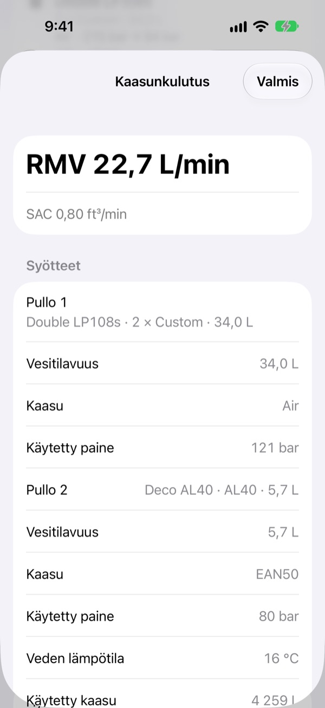
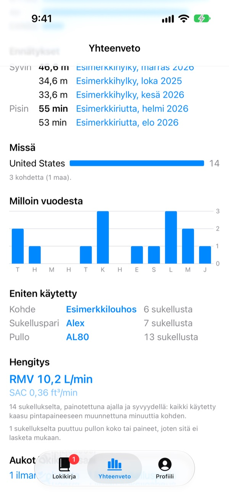

Päivitä ensin jokainen laite
Moni ongelma katoaa, kun jokaisessa laitteessa on uusin build. Avaa TestFlight jokaisella käyttämälläsi iPhonella, iPadilla ja Macilla ja asenna mahdolliset päivitykset. Vanhempi build lakkaa lähettämästä muutoksia, kunnes se päivitetään, ja näyttää ilmoituksen Päivitä Thermocline, jotta synkronointi jatkuu. Muutoksesi säilyvät ja lähtevät päivityksen jälkeen.
Lataukset sukellustietokoneelta
Tietokonetta ei löydy
- Herätä tietokone ja laita se Bluetooth-tilaan (Shearwater: Menu → Bluetooth). Se pysyy tilassa vain noin kaksi minuuttia.
- Pidä se lähellä iPhonea, iPadia tai Macia.
- Shearwater-tietokoneet palaavat viimeksi käyttämäänsä laitteeseen. Jos puhelimesi tai toinen Mac on lähellä, laita Bluetooth pois päältä siinä laitteessa ja yritä uudelleen.
- Tarkista, että Bluetooth on päällä ja että Thermocline saa käyttää sitä (iPhone: Asetukset → Thermocline; Mac: Järjestelmäasetukset → Tietosuoja ja suojaus → Bluetooth).
Se on Predator tai Petrel 1, eikä iPhone näe sitä
Nämä käyttävät vanhempaa Bluetoothia (Bluetooth Classic), jota iPhone ja iPad eivät pysty käyttämään. Lataa ne Macilla (katso opas) tai tuo niiden sukellukset Shearwater Cloudista tai UDDF-tiedostosta.
Yhteys muodostuu, mutta se pyytää PIN-koodia
Kirjoita tietokoneen näytöllä näkyvä koodi. Sitä tarvitaan vain ensimmäisellä kerralla.
”Ei uusia sukelluksia”
Vain edellistä latausta uudemmat sukellukset haetaan. Jos poistit sukelluksen ja haluat sen takaisin, laita päälle Lataa kaikki tietokoneen sukellukset ja lataa uudelleen. Lokikirjassasi jo olevat sukellukset ohitetaan.
Lataus pysähtyi kesken
Valitse Pidä tallentaaksesi saapuneet sukellukset ja lataa sitten uudelleen loput. Jos lataus pysähtyy toistuvasti, valitse Yritä uudelleen lähellä tietokonetta ja lähetä latausloki.
Kaapelilataus epäonnistuu Macilla
- Tarkista, että portti sopii kaapeliin: luettelo kertoo, minkä tyyppinen kukin portti on, ja varoittaa, kun se ei sovi valitsemallesi mallille.
- Irrota kaapeli ja kytke se uudelleen ja etsi sitten kaapeleita uudelleen päivityspainikkeella.
- Seuraa mallisi ohjeita kohdassa Ennen kuin aloitat.
- Kaapelilataukset ovat uusia. Lähetä latausloki joka tapauksessa.
Synkronointi laitteiden välillä
iPhone-sovellukseni sanoo, että Thermocline on nyt yksi sovellus, tai näen kaksi Thermocline-sovellusta
18. marraskuuta 2026 iPhone-, iPad-, Mac- ja Apple Watch -sovelluksista tuli yksi sovellus, jolla on yksi betalinkki. Aiempi iPhone-sovelluksesi auttaa nyt vain siirtymisessä.
- Avaa vanha sovellus. Jos se kertoo synkronoinnin olevan pois päältä, napauta Laita ”Synkronoi iCloudin kanssa” päälle ja jätä sovellus auki minuutiksi, tai napauta Vie lokikirjani UDDF-muodossa ja tallenna tiedosto.
- Napauta Liity uuteen betaan tai avaa betalinkki iPhonellasi ja asenna uusi sovellus. Se asettuu vanhan rinnalle.
- Laita uudessa sovelluksessa päälle Profiili → Synkronoi iCloudin kanssa. Sukelluksesi, kohteesi, varusteesi ja asetuksesi palaavat. Jos veit tiedoston, käytä sen sijaan Profiili → Tuo lokikirjatiedosto.
- Voit joutua muodostamaan sukellustietokoneellesi parin uudelleen ja asentamaan Watch-sovelluksen uudelleen iPhonesi Watch-apista.
- Kun uusi sovellus näyttää samat sukellukset, poista vanha.
Macilla mikään ei muutu: päivitä Mac-sovellusta tavalliseen tapaan.
Sukelluksia puuttuu tai ne ovat kahteen kertaan synkronoinnin jälkeen
- Älä muuta vielä mitään. Ota kuvakaappaus Synkronointi-osiosta (iPhone: Profiili → Synkronointi; Mac: Thermocline → Asetukset → Synkronointi) jokaisessa laitteessa ja lähetä se.
- Tarkista, että jokaisessa laitteessa on uusin build.
- Profiili → Tietosi → Palautuspisteet voi palauttaa lokikirjasi tilaan ennen tuontia, yhdistämistä tai poistoa. Palauttaminen tallentaa ensin nykyisen lokikirjasi, joten sen voi kumota.
Yhdellä laitteella tehty muutos ei näy toisella
- Tarkista, että Synkronoi iCloudin kanssa on päällä molemmissa ja että niissä on kirjauduttu samalle Apple-tilille.
- Katso kohtaa Odottaa lähetystä laitteessa, jossa teit muutoksen, ja avaa sovellus molemmissa, kun yhteys on käytettävissä. Synkronointi-osio kertoo, kun tämä laite ja muut laitteesi täsmäävät.
- Paina Synkronoi nyt.
”Et ole kirjautunut iCloudiin”
Kirjaudu iCloudiin laitteen Asetuksissa. Siihen asti lokikirjasi pysyy tallessa kyseisellä laitteella ja synkronoituu, kun olet kirjautunut.
”iCloud-tallennustilasi on täynnä”
Lokikirjasi on laitteella tallessa ja synkronoituu, kun tilaa on. Vapauta iCloud-tilaa tai laita päälle Säästä iCloud-tallennustilaa sukelluskuvissa, jotta kuvia ei tallenneta kahteen kertaan.
”Toinen laite käyttää uudempaa versiota”
Päivitä Thermocline tällä laitteella TestFlightissa. Muutoksesi ovat täällä tallessa ja lähtevät päivityksen jälkeen.
Tuonnit
Osa sukelluksista tai tiedoista ei tullut mukaan
Tuontiraportti luettelee kaiken kohdissa Ei tuotu ja Tarkista syineen. Jokainen lokikirja kirjoittaa UDDF:n hieman eri tavalla, joten puuttuvat arvot ovat normaaleja ja jäävät tyhjiksi. Jos jotain odottamaasi puuttuu, lähetä raportti ja mahdollisuuksien mukaan tiedosto.
MacDiven varusteeni, kuvani tai sukellustyyppini puuttuvat
MacDiven UDDF-vienti jättää ne pois. Tuo sen XML päälle varusteita, tunnisteita ja sukellustyyppejä varten, ja tuo Macilla MacDiven kansio kuvia varten. Lokikirjassasi jo olevia sukelluksia ei lisätä kahdesti. Katso Mitä MacDive-tiedostoa käyttää.
NDL, ppO₂ tai CNS puuttuu MacDiven sukelluksista
Sukellussivu näyttää NDL:n muodossa ”—” ja Deko-arvon muodossa ”Ei tallennettu”, tai ppO₂-kohdassa lukee ”Laskettu kaasusta ja syvyydestä”. MacDiven UDDF-vienti ei sisällä tietokoneen NDL:ää, ppO₂:ta eikä CNS:ää. Sen kansiossa ei ole profiilia sukelluksille, jotka MacDive latasi iPhonella tai iPadilla, koska se tallentaa ne salattuina.
Tuo myös MacDiven XML: se täydentää puuttuvat tiedot lisäämättä sukelluksia uudelleen. Katso Mitä MacDive-tiedostoa käyttää.
Katoaako jotain, kun siirryn tiedostojen tai sovellusten välillä?
- Alkuperäisiä tiedostojasi ei koskaan muuteta. Säilytä MacDive-vientisi ja pidä itse MacDive, kunnes olet verrannut muutamaa sukellusta.
- Uusi tuonti lisää, se ei korvaa. Lokikirjassasi jo olevat sukellukset tunnistetaan ja saavat vain puuttuvat tiedot, joten voit tuoda XML:n UDDF:n jälkeen tai kansion kumman tahansa jälkeen.
- Voit palata takaisin. Palautuspiste nimeltä Ennen tuontia tallennetaan ennen jokaista useamman kuin yhden sukelluksen tuontia (Profiili → Tietosi → Palautuspisteet iPhonella, Asetukset → Palautuspisteet Macilla). Macilla myös raportin Kumoa tuonti… peruu sen.
- Thermoclinesta lähteminen: sen UDDF-vienti on täydellinen. Se sisältää tietokoneen NDL:n, ppO₂:n ja CNS:n kunkin sukelluksen ajalta, varusteet, tunnisteet, sukellustyypit ja videolinkit. Kuvat eivät ole minkään vientitiedoston sisällä.
Tuoduilla sukelluksilla ei ole kaasua
Tiedostossa ei kerrottu, mitä kaasua käytettiin. Nämä sukellukset odottavat kohdassa Tarkistettavat, jotta voit asettaa sen.
Toin väärän tiedoston
Käytä Macilla tuontiraportin toimintoa Kumoa tuonti…. Kummallakin laitteella palautuspiste nimeltä Ennen tuontia tallennetaan ennen jokaista useamman kuin yhden sukelluksen tuontia.
Garmin-tiedoston tuonti ei onnistu
- ”Tämä on zip-tiedosto”: Garmin Connectin Vie alkuperäinen antaa .zip-tiedoston. Pura se ja valitse sitten sen sisällä oleva .fit-tiedosto.
- ”Tämä ei ole Garmin FIT -tiedosto”: tiedosto ei ole Garmin-kellosta, tai vain sen nimi päättyy .fit. Käytä kellon kansiossa GARMIN → Activity olevaa tiedostoa tai Vie alkuperäinenia.
- ”Garmin-tiedosto ei sisällä sukellusta”: juoksut, kävelyt, asetukset ja terveystiedostot ohitetaan. Vain sukellukset tuodaan.
- ”Näyttää katkenneelta tai vioittuneelta”: tiedosto loppui kesken, usein keskeytyneen kopioinnin tai latauksen vuoksi. Luettavissa oleva osa näytetään; kopioi tiedosto uudelleen kellosta ja tuo se uudelleen saadaksesi loput. Lokikirjassasi jo olevat sukellukset ohitetaan.
- Garmin-tiedoston valitseminen yhdessä toisen lokikirjatiedoston kanssa ei onnistu kerralla: tuo ensin lokikirjatiedosto ja sitten Garmin-tiedostot.
Garmin-sukellus pyytää tarkistamaan pullot
Kun pullolähettimiä on useampi kuin yksi, Garminin tiedosto ei kerro, missä kaasussa kukin oli, joten ne yhdistettiin sukelluksen pulloihin järjestyksessä. Avaa sukelluksen kaasuosio ja varmista, että kukin paine on oikean pullon kohdalla.
Garmin-sukelluksen aika on tunnin pielessä
Aika tulee kellon kellonajasta. Jos sitä ei ollut asetettu sukelluspaikan paikalliseen aikaan, sukellus näkyy kellon ajassa. Muokkaa sukelluksen aikaa tai aseta kellon aikavyöhyke ennen seuraavaa matkaa.
Virtasukelluksella on väärä kohde
Sukellus yhdistetään lähempään kahdesta paikasta: siihen, josta menit veteen, tai siihen, jossa nousit pintaan, mikä virtasukelluksella on yleensä veteenmenopaikka. Jos se yhdistettiin väärään kohteeseen tai ei mihinkään, valitse kohde sukelluksessa ja lisää muut ohittamasi hylyt muistiinpanoihin.
Kaasunkulutus ja SAC
SAC-arvo näyttää väärältä
Napauta tai napsauta sen vieressä Miten?. Se näyttää kaikki lähtötiedot: pullon ja sen vesitilavuuden, paineet, lämpötilan, reaalikaasukorjauksen, ajan ja syvyyden. Tavallinen syy on väärä pullon koko; korjaa se Varusteissa. Lähetä kuvakaappaus Miten?-näkymästä, jos arvo näyttää yhä oudolta.

SAC-arvoa ei ole, vain viesti
- Lisää pullon koko nähdäksesi SAC-arvon: valitse pullon malli tai syötä sen koko.
- Lisää alku- ja loppupaine nähdäksesi SAC-arvon: lähetintä ei ole, joten syötä ne pulloon.
- SAC tarvitsee sukellusprofiilin: käsin ilman profiilia kirjatuilla sukelluksilla ei ole SAC-arvoa.
- Suljetun kierron sukelluksille ei lasketa SAC-arvoa.
SAC laskee vain yhden pullon
Usean kaasun sukelluksella vain lähettimellä varustetulla pullolla on paineet. Syötä toiselle pullolle alku- ja loppupaine, niin SAC kattaa kaiken kaasun.
Yhteenvedon Hengitys kertoo, ettei millään sukelluksella ole pullon kokoa
Hengitys laskee keskiarvon vain sukelluksista, joilla on pullon koko sekä alku- ja loppupaine. MacDiven UDDF:stä tulleilla sukelluksilla ei ole pullon kokoa, koska sen koot eivät ole vesitilavuuksia; XML:n tuominen päälle täydentää ne (katso Mitä MacDive-tiedostoa käyttää). Muuten aseta pullo sukelluksillesi (valitse sen malli tai varustesetti) ja lisää paineet, jos ne ovat tiedossa. Luvun alla Hengitys kertoo, montako sukellusta jäi laskematta.

Kuvat
Kuva ei näy toisella laitteellani
Kun Säästä iCloud-tallennustilaa sukelluskuvissa on päällä, kuva säilyttää kopionsa, kunnes toinen laitteesi löytää sen iCloud-kuvista. Laita asetus päälle molemmissa laitteissa, tarkista, että iCloud-kuvat on päällä molemmissa, ja anna latautumiselle aikaa.
Videoita ei lisätty
Kirjastosi videoita voi vain linkittää, ei kopioida. Laita päälle Synkronointi → Säästä iCloud-tallennustilaa sukelluskuvissa ja varmista, että video on iCloud-kuvissa. Tai liitä YouTube- tai Vimeo-linkki sukelluksen kuvien alle.
”Thermocline ei voi lukea kuviasi”
Kuvat-käyttöoikeus evättiin, joten kuvat kopioidaan linkittämisen sijaan. Linkittääksesi ne salli käyttö kohdassa Asetukset → Tietosuoja ja suojaus → Kuvat → Thermocline.
Kohteet ja Apple Watch
Ehdotettu kohde on väärä, tai ehdotusta ei ole
Valitse toinen kohde, hae sisäänrakennetuista listoista nimellä tai merkitse tai kirjoita sijainti itse. Sisämaan louhokset ja järvet puuttuvat usein julkisista listoista, joten omat kohteesi tulevat siitä lähtien ehdotuksissa ensin.
Thermocline ei ole Apple Watchissani
Watch-sovellus tulee TestFlightin iPhone-sovelluksen mukana. Avaa iPhonessasi Watch-appi, etsi Thermocline kohdasta Käytettävissä olevat apit ja napauta Asenna. Se vaatii watchOS 11:n tai uudemman. Jos siirryit vanhasta iPhone-sovelluksesta, asenna se uudelleen: vanha Watch-sovellus kuuluu vanhaan iPhone-sovellukseen.
Kello näyttää ”Odotetaan hyvää sijaintia”, ja Merkitse paikka pysyy harmaana
Paikka tallennetaan vain sijainnista, jonka tarkkuus on ±30 m ja joka on alle 30 sekuntia vanha, joten väärä sijainti ei koskaan päädy lokikirjaasi. Pysy pinnalla kello vedestä nostettuna ja taivas näkyvissä ja anna sille minuutti. Vanha välimuistissa oleva sijainti ohitetaan tarkoittaa, että se odottaa tuoretta sijaintia. GPS ei toimi veden alla: merkitse paikka ennen laskeutumista tai kun nouset pintaan.
”Sijaintipalvelut ovat pois päältä Thermoclinelta” kellossa
Avaa kellossa Asetukset → Tietosuoja ja suojaus → Sijaintipalvelut, laita Sijaintipalvelut päälle ja salli Thermocline apin käytön aikana.
Kellossa merkitty paikka ei ilmestynyt iPhoneen
Avaa kellossa Merkityt paikat. Odottaa lähetystä iPhoneen tarkoittaa, ettei iPhone ole vielä saanut sitä: pidä kello lähellä iPhoneasi ja avaa Thermocline iPhonessa. Lähetetty iPhoneen tarkoittaa, että se on siellä: katso kohdasta Lokikirja → Tarkistettavat. iPhone hakee paikan tiedot, kun se on verkossa, joten ilman yhteyttä paikka odottaa tilassa odottaa yhteyttä hakua varten.
Kello ei näyttänyt kohteen nimeä, kun merkitsin paikan
Nimi tulee iPhonestasi: kun se on lähellä ja Thermocline pystyy vastaamaan, kello näyttää paikan alla kohteen, jota se ehdottaisi, omasi tai sukelluskohdelistoista, sekä sen etäisyyden. Kun iPhone on kantaman ulkopuolella, kello nimeää omat kohteesi iPhonesi siihen jättämästä kopiosta, mutta ei sukelluskohdelistojen kohteita. Jos noin 1,5 km:n säteellä ei ole kohdetta, paikka merkitään ilman nimeä. Kummassakin tapauksessa valitset kohteen iPhonessa kohdassa Lokikirja → Tarkistettavat.
Kelloon sanomani nimi ei tallentunut
Nimi tallentuu, kun sanelu tai näppäimistö sulkeutuu tai kun palaat takaisin. Avaa Merkityt paikat, napauta paikkaa ja tarkista sen nimi; napauta Vaihda nimi yrittääksesi uudelleen. Jos paikka oli jo lähetetty, nimi seuraa sitä iPhoneen.
Tallentaako kello sukellukseni?
Ei. Thermoclinen Watch-sovellus vain merkitsee paikkoja pinnalla. Sukelluksesi tulevat sukellustietokoneeltasi. Garmin Descent -kelloista tuo niiden .fit-tiedostot: katso oppaan kohta Garmin Descent.
Paikka katosi kellosta
Näin on tarkoitus. Paikka poistuu kellosta, kun se on vahvistettu tai hylätty iPhonessa. Vahvistettu paikka on kohde lokikirjassasi ja synkronoituu muihin laitteisiisi.
Lähetä raportti tai latausloki
- Sovelluksesta: ota kuvakaappaus ja käytä sitten TestFlightin toimintoa Jaa palautetta betasta. Se saapuu niin, että build ja laite ovat mukana.
- Latausloki, iPhone: napauta latausnäkymässä Latausloki ja jaa se. Se sisältää vain Bluetooth- ja tietokoneviestit, ei sukellustietoja.
- Latausloki, Mac: valitse latausikkunassa Latausloki…, sitten Tallenna loki… ja liitä tiedosto.
- Sähköposti: brian@616labs.net, ja kerro laitteesi, buildin numero (näkyy TestFlightissa) ja mitä odotit tapahtuvan.